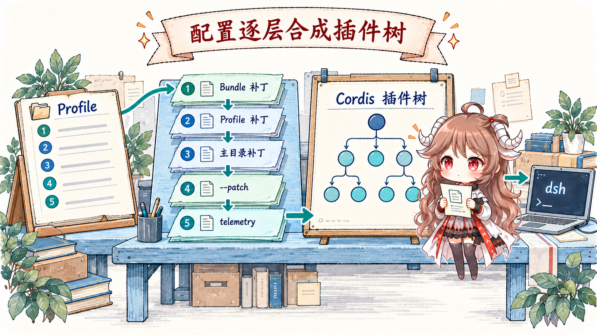
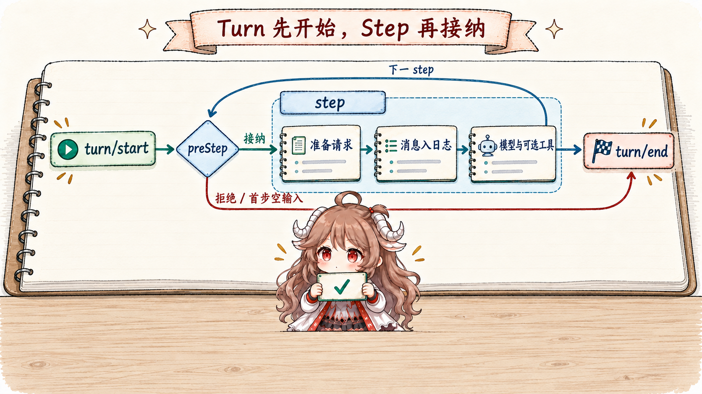

先设定一个贯穿全文的任务：用户打开 dsh web，要求“检查仓库里失败的测试，修好后给出结果”。这句话会触发至少四类工作：启动器要知道加载哪套产品；运行时要创建或恢复一段 session；模型可能多次请求工具；界面还要把正在发生的事件和最终结果显示出来。
把它缩成“浏览器请求 → LLM → 工具 → 回答”会漏掉真正决定正确性的部分。模型请求前，谁拼出 system、history 与 tools？工具执行前，谁确保持久记录已经落地？进程崩溃后，哪些事件可以重放，哪些副作用必须标成结果未知？如果这些问题没有明确所有者，harness 就只是一次能跑通的 demo。
阅读契约。读完本文，你应该能复述：dsh web 怎样选中 profile；bundle patch 怎样变成 Cordis 插件树；ReactLoopAgent 如何划分 turn 与 step；为什么 SessionEvent[]、surface.nodes 与 deriveMessages() 不是同一份“聊天记录”；以及一次工具副作用为什么必须先穿过日志、策略和 sandbox 边界。
证据边界。本文固定在 DeepSeek Harness 提交 ddefc45fbc7f8e46dd73185e68295696d1297887，对应 dsh-v0.1.6-alpha.2。类型、事件顺序与默认组合来自这个快照。仓库同时把项目标为 developer preview，因此本文描述的是源码契约，不把它外推成生产可用性、性能或安全认证。
一、dsh web 启动的不是单个应用
1.1 CLI 先选择 profile，再把剩余参数交给产品
apps/cli/src/args.ts 把 dsh <name> 统一展开成 dsh --profile <name>，web 已不是唯一硬编码别名。plugin 保留为管理命令，名为 plugin 的 profile 必须显式使用 --profile plugin；desktop 则由 Electron 独占，CLI 拒绝管理。启动器解析自己拥有的参数，再把余下 argv 交给已装入的应用插件。
这条边界看似只是 CLI 设计，实际上避免了一个常见耦合：顶层启动器不需要知道 Web、SDK、ACP 或 headless 将来新增哪些 flag。它只负责决定“装哪棵插件树”，产品行为由树里的插件声明。
dsh web --no-open
dsh headless "run the tests"
dsh rescue --from-default-profile web
dsh rescue --patch ./extra.yml1.2 Profile 是可修改实例，Bundle 是可复用层

profile-boot.ts 与 readProfilePatches() 明确了层叠顺序：先按 dsh.profile.bundles 的顺序应用 bundle patch，再叠 profile 自己的 cordis.patch.yml、home 级 patch、命令行 --patch，最后加 telemetry switch。每一层都是对同一棵配置树的 patch，不是多个互不相干的配置文件。
因此 profile 与 bundle 不只是“用户配置”和“默认配置”的别名。Bundle 表达可以复用、可以依赖的产品层，例如 base 与 web-app；Profile 则是某个用户环境中真正会启动的实例，可以安装额外 bundle，也可以覆盖默认参数。--from-default-profile web 只在目标不存在时，复制发布模板的 bundle 列表创建独立实例；它不复制已有 web profile 的本地状态，也不建立持续继承关系。配置能否立即生效则由运行中的 HMR 决定：base 默认启用配置重载，headless、SDK、ACP 默认禁用，sdk-minimal 不挂载 HMR；Plugin Manager 会返回已应用或需要重启的结果，不能把写入磁盘等同于运行树已经改变。
| 层 | 拥有的事实 | 改变它会影响什么 |
|---|---|---|
| Bundle | 一组可发布、可复用的 Cordis patch 与依赖。 | 决定产品默认拥有哪些服务和插件。 |
| Profile manifest | 这个实例按什么顺序采用哪些 bundle。 | 决定产品组成；运行中能否应用取决于重载能力。 |
cordis.patch.yml | 实例级插件配置和覆盖。 | 修改服务参数、挂载位置或局部能力。 |
--patch | 本次调用的临时覆盖层。 | 适合诊断或一次性组合，不改写基础层。 |
1.3 “Everything is a plugin” 的含义是能力缝隙可替换
项目的 Architecture 文档把 model adapter、tools、session log、agent loop 都列为插件。packages/core/* 只保留少量内核契约：LLM 请求/流式块、工具 schema/执行、SessionEvent、Agent handle 与插件作用域。具体实现通过 Cordis service 和事件 seam 接入。
关键不是“代码拆成很多 npm 包”，而是消费者依赖一个 capability，provider 在作用域内提供它。插件树又决定 provider 在哪里可见、何时卸载、能拦截哪些事件。替换模型适配器、持久化或 agent loop 因而不需要让所有上层都识别新实现。
二、一次 turn 怎样进入 ReactLoopAgent
2.1 Session 先成为运行事实的容器
Web 或 ACP 入口最终不会直接调用 llm.stream()。它先通过 agent registry 获取一个 handle，handle 关联一份 Session。这个对象维护追加式 SessionEvent[]、当前 surface、header 与 scoped context；持久化插件则订阅 session/event，在 session/flush 观测屏障被等待。
这使“模型可见”有了严格定义：想让某个事实参与恢复、投影或下一次请求，必须先把它写成 session event。只存在于局部变量、console 或 UI store 里的状态，不属于 Agent 的可恢复历史。
2.2 Turn 包住多个 step，step 包住一次模型推进

ReactLoopAgent.turn() 先写入 turn/start，再 claim inbox 并运行 preStep()。只有输入被允许进入时才写 step/start。拒绝、首步空输入、取消或失败都可能直接以零个 step 结束 turn；已进入的 step 在 finally 中关闭，turn 也用结构化 reason 关闭。正常回答、输出上限、blocked、aborted 与 error 是不同结局，turn/end 本身并不等于任务成功。
所以 turn 不是一次 HTTP 请求，也不是一次 provider call。我们的“修测试”任务可能包含读取日志、搜索源码、修改文件和运行测试四轮模型—工具往返，但它仍属于同一个 turn。step 是本轮中一次可观测的推进单位；请求错误策略若返回 retry，同一个 step 内还可以开始下一次模型尝试，而不是为每次重试另开 turn。
下列顺序图省略工具内部调度，保留是否进入 step 和请求结算的边界：
turn/start
preStep：claim 输入、装配能力、决定 enter / reject
enter → step/start
prepareRequest → system/message → user/message
request/header → 模型尝试 → 消息或失败尝试结算 → 可选工具
请求策略允许时：在同一 step 内重试
step/end → 需要时进入后续 step
turn/end { reason } // 也允许零个 step2.3 preStep() 负责领取输入和装配能力
preStep() 先从 inbox claim 当前目标，再通过 system-prompt assembly 收集提示词与工具、投影 runtime context，最后运行 agent/pre-step waterfall。它可以拒绝这次推进，也可以修改进入 step 的消息。运行阶段管理只启动一个 driver，claim 则把输入从队列移交给本次推进，避免重复接纳。
系统提示词和工具也不是构造 Agent 时冻结的一份数组。插件可以按 session、turn、step 和 runtime scope 提供或裁剪能力。这样做的代价是装配顺序本身成为产品语义；第二篇会专门读 Cordis patch 怎样确定顺序与作用域。
三、模型看到的是事件投影，不是原始日志
3.1 buildRequest() 在模型调用前固定请求封装
进入 step 后，prepareRequest() 先运行 agent/request 并绑定 provider call，拿到当前路由的真实能力。loop 再按该能力提交 system/message 与用户输入，最后由 buildRequest() 调用 Session.deriveMessages() 得到模型历史。对应源码 固定并冻结请求；流式路径 把过程发布为 agent/assistant-stream 实时帧，在一次尝试结束时才用 assistant/message 或 assistant/attempt 内嵌 stream 结算。已经显示的实时帧不能当作已落盘消息。
buildRequest() 还会把非历史请求封装写成 request/header：provider/model 配置、tools 与适配器默认值有了可恢复的规范快照。System 已经属于 surface，不再放进 header。另一个 request/context 记录路由容量及 system 更新能力，它不参与 header 相等性，也不能代替本次绑定的 provider 能力。否则恢复时即使有对话，也无法证明当时到底用哪组工具和模型配置发出了请求。
3.2 一份 Session 同时维护三种视图

Session 同时维护三类信息：
- 原始事件日志：
SessionEvent[]按 seq 追加，保留 turn、step、已结算的 assistant stream、tool、header、compaction 等事实； - surface projection：
surface.nodes表示当前有效的会话表面，压缩可以用新 generation 替换一段旧表面，但不抹掉原始事件； - 模型消息：
deriveMessages()只把表面节点中满足模型消息契约的事件转成Message[]，四种消息事件包含 system；turn/start和assistant/attempt本身不会直接塞进 provider history。
Web UI 可以读取比模型更多的事件，用来显示进度、token、工具状态和诊断信息。于是“用户能看见”“模型能看见”“恢复能重建”是三种不同的可见性；都从同一事件源派生，却不能互相替代。
四、工具调用为什么先经过持久化和治理
4.1 模型只提出动作，runtime 才拥有副作用

LLM stream 产出结构化 tool call 后，loop 会把调用写入 session，再交给工具服务。工具调度器安排实际派发，默认 bundle 还装入 checkpoint policy、approval、sandbox 与 result pruning 等插件。调用先经过有序的 pre-execute 决策，其中 approval 按需触发，guard 可拒绝执行；获准后才在工具正文之前等待 flush。它们分别回答调用事实是否已持久、策略是否允许、是否需要用户决策、代码在哪个限制环境里运行以及结果怎样回到模型。多个可并行工具可以重叠执行，但提交仍按模型调用顺序排列；具体调度见第四篇。
这些门不能合成一个“安全检查”。Approval 是交互决策，不提供文件系统隔离；sandbox 限制运行环境，却不知道用户是否希望执行；session/flush 只证明日志越过耐久屏障，也不说明动作本身合法。把责任拆开，失败时才知道应该拒绝、等待、重试还是停止。
4.2 崩溃恢复的关键是“不确定”可以被表达

默认 JSONL persistence 用追加式日志保存事件，并可使用 zstd 压缩。历史格式先经内置迁移链转到当前 v3，再进入恢复。Session.fromRestore() 校验种子事件、重建 surface 与 request header，再让 Agent 从持久状态继续。真正危险的是进程恰好在工具副作用发生以后、tool/result 持久以前崩溃。
repair.ts 区分 TOOL_NOT_STARTED 与 TOOL_OUTCOME_UNKNOWN：前者表示持久前缀里没有记录该调用的开始，后者表示已经记录 tool/call 却没有持久结果，不能据此判定外部动作是否发生。修复器补上带错误码的合成 tool result 和缺失的 step/turn 结束事件，让 transcript 成对完整。对于未知结果，合成消息要求只读或幂等操作才可考虑重试；可能产生副作用时应先核实外部状态或询问用户。这是恢复记录提供的决策提示，不是强制禁止一切重试的隔离机制。
五、Web 与 ACP 只是同一运行内核的两种表面
5.1 产品界面消费 handle 与事件，不接管 loop
Architecture 文档把 Web、headless、SDK 与 ACP 放在 profile/bundle 层；SDK 另有不叠加 base 的 sdk-minimal 组合，Electron 则以自己的 Host 启动共享 Web 应用。它们可以选择输入方式、事件展示和投递协议，却共享 core agent、session、LLM 与 tools 的能力 seam。换句话说，浏览器不是 Agent 的所有者；它是一个能够创建、恢复、发送和观察 handle 的消费者。
这也是 DSH 适合单开一个系列的原因：它研究的不是某一个 Agent 产品怎样堆功能，而是不同产品表面怎样复用同一组运行语义。如果 Web 自己维护一份“真实历史”、ACP 又维护另一份，恢复和工具治理就会随入口漂移；事件化 session 把它们重新压到同一事实源上。
5.2 一次完整路线可以压成七个交接点
dsh解析 launcher 参数并选中 Profile；- Profile 按 Bundle、实例 patch 与命令行覆盖合成 Cordis 树；
- 产品入口通过 registry 创建或恢复 Agent handle 与 Session；
ReactLoopAgent先打开 turn，再 claim inbox、装配 prompt/tools 并决定是否进入 step；deriveMessages()从 surface 派生 history，LLM service 输出实时帧，loop 结算为消息或失败尝试；- 工具调用通过策略与按需 approval，再等待执行前 flush、在受限制环境中执行并写回 result；
- loop 以明确 reason 写入
turn/end，Web/ACP 从同一事件源观察并交付结果。whenIdle()和 turn 边界本身不等待落盘，随后读取存储的消费者还须显式 flush。
六、后续六篇要打开哪些边界

第一篇建立的是坐标系。后续六篇会沿同一提交按依赖顺序深入：
- Cordis 装配：patch、service、scope 与 lifecycle 怎样让一棵产品树可替换又不失序；
- 事件会话：“Model-visible means logged”怎样落实到 surface、projection 与恢复不变量；
- 副作用治理：checkpoint、approval、sandbox、pruner 与 crash repair 怎样组成一条执行协议；
- 压缩：compaction 为什么替换 surface 而不删除原始事件，以及 request header 如何支持 cache-friendly reconstruction；
- 多 Agent：spawn/fork、可继续对话的子 Agent、PTC workflow、Ralph 与 experimental Team 分别拥有怎样的 session 和交付边界；
- 持久插件扩展：两个只读 Inspect 工具与
plugin_manager怎样把 Bundle 保存到 profile，以及保存、Host 激活与浏览器验收为何必须分开。
从这条主线再回看“everything is a plugin”，它不再是一句包装语。模型适配、工具、状态、循环和界面确实都能被替换；但它们必须服从同一套事件、作用域与副作用契约，系统才不会在灵活性中失去可解释性。
参考源码与文档
- 项目 README 与 Architecture：产品定位、插件树与 turn flow。
- profile-boot.ts 与 CLI README：Profile、Bundle 和 patch 层叠。
- agent.ts：ReactLoopAgent 的 turn/step、request 与 stream 主线。
- Session 实现 与 Session 契约：事件、surface、消息投影与恢复。
- base bundle：默认持久化、approval、sandbox、compaction、subagent 与 agent-loop 装配。